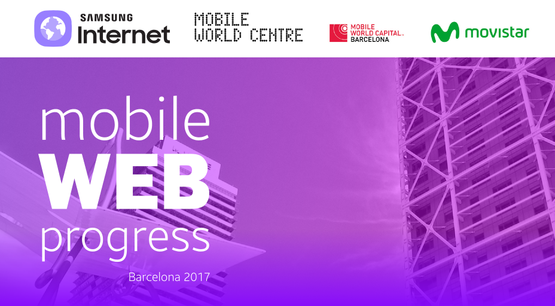

{{ post.short_desc }}
 Latest Blog Posts
Latest Blog Posts
{% else %}
{% if post.link %}
{% if post.image %}
{% else %}
{% if post.image %}
{% endif %}
{% if post.external %}{{ post.external }}{% endif %}
{% endif %}
{% endfor %}
{% if post.image %} {% endif %}{{ post.title }}
{% endif %}{{ post.title }}
{% else %}
{% if post.image %}{% endif %}{{ post.title }}
{% endif %}
{% if post.external %}{{ post.external }}{% endif %}
{{ post.long_desc }}
 Events
Events

Mobile World Progress
For many, it feels as though we are increasingly living in an age of political anger and polarisation. Admittedly, technology has had its…